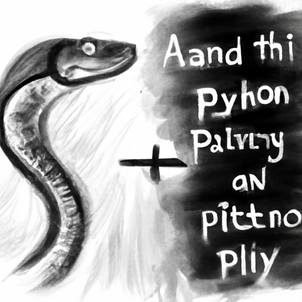

The future of Python and AI
As the world continues to embrace the powerful capabilities of artificial intelligence (AI), more and more businesses are turning to Python to build their AI models and applications. Python has become one of the most popular languages for AI development, and it’s no surprise that it’s flourishing in the AI space.
Python is an excellent language for developing AI algorithms and models. It features a wide range of libraries and frameworks, such as TensorFlow, Keras, Scikit-learn, and PyTorch, that make it easier for developers to build AI models. Python is also simple to learn, making it a great choice for developers just getting started with AI.
The future of AI is still largely unknown, but Python will likely remain a key player in its development. Python’s flexibility and scalability make it an ideal language for developing cutting-edge AI applications. AI developers will be able to take advantage of Python’s simple syntax and wide range of libraries to quickly create powerful AI models.
Python will also be a key factor in the future of AI research. Python allows AI researchers to quickly prototype new models and algorithms, making it a valuable tool in the development of new AI technologies.
Python is already an indispensable tool for AI developers, and its importance will only continue to grow in the coming years. As AI technology advances, Python will be at the forefront of its development.